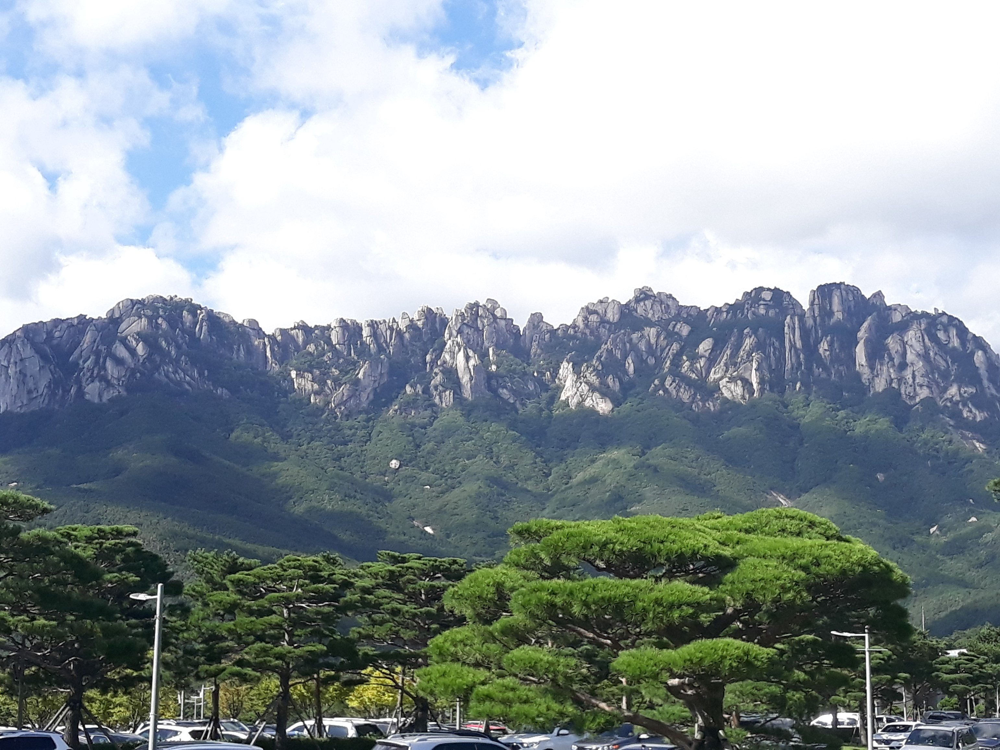

Travel
Domestic
|  | |
| Sok-Cho | Gyeong-Ju |
|
The scenery of Mt. Seorak is beautiful. |
vacation last year. I visit often because it is close to my hometown. |
Overseas
| Thailand | Vladivostok, Russia |
enjoying water activities in Pattaya. |
going to go this summer, but I can't because of COVID-19. |